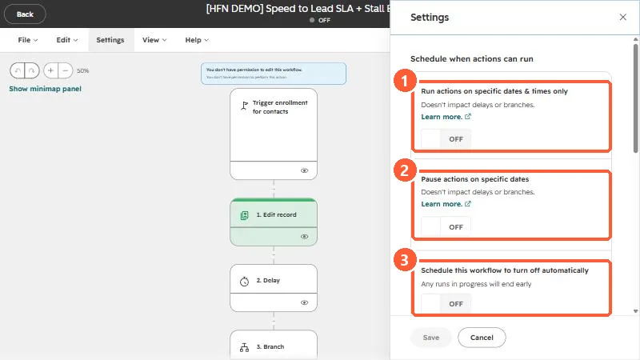
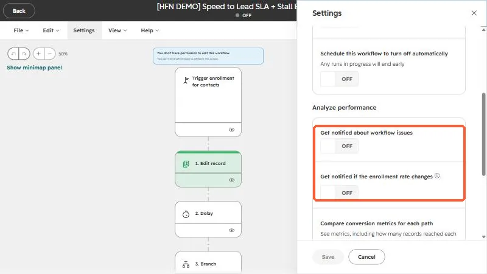
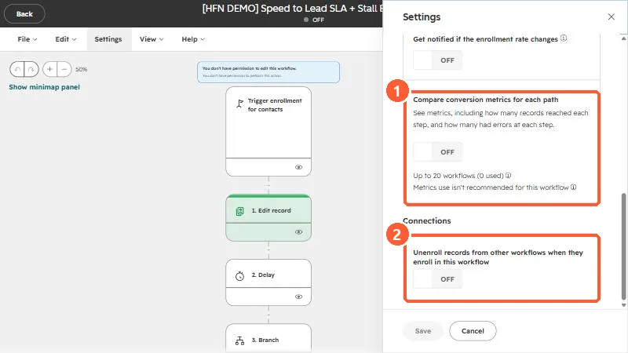

Short answer
Open a workflow and click Settings. Three groups: Schedule when actions can run (specific days and times, paused dates, an automatic turn-off date), Analyze performance (issue and enrollment-rate notifications, conversion metrics for each path), and Connections (unenroll records from other workflows). HubSpot notes that delays and if/then branches are not rescheduled by the time window, and that the unenroll setting applies only at the moment of enrollment.
1. Open Settings
Open a workflow from Workflows and click Settings in the menu under the workflow name. A panel slides in from the right. I am showing a demo workflow that is turned off. The toggles are all off here, which is the default.
2. Schedule when actions can run
Three toggles control timing:
- Run actions on specific dates and times only. Limits actions to days and hours you choose, based on your account time zone. Records that reach an action outside the window wait for the next slot. HubSpot's own caveat: delays and if/then branches are not rescheduled, but the action after them is.
- Pause actions on specific dates. Records still enroll, but they pause at the next action after any delay or branch ends. You can repeat a date every year.
- Schedule this workflow to turn off automatically. Picks a future date and time. Any runs in progress end early.


Scheduled windows use the account's time zone. HubSpot says it defaults to Eastern if none is set, so confirm yours before you rely on a send window.
3. Analyze performance
Two notification toggles and one metrics toggle:
- Get notified about workflow issues. Alerts you when the workflow needs review.
- Get notified if the enrollment rate changes. Alerts you to unusual swings in how many records enroll.
- Compare conversion metrics for each path. Collects how many records reached each step and how many errored.
HubSpot lists the performance notifications as an Enterprise feature, and individual users still need their own notification preferences turned on. The conversion metrics toggle shows a limit. In my demo account it reads up to 20 workflows, with none used.




4. Connections: unenroll from other workflows
For contact-based workflows, Unenroll records from other workflows when they enroll in this workflow removes a contact from other workflows at the moment it enrolls here. It is useful when two workflows would send conflicting emails. The catch from HubSpot: it applies only at the time of enrollment. It does not stop the contact being enrolled in the other workflow later.
These settings are about behavior. Enrollment rules, goals, and suppression lists are on the trigger card, not here. See why a contact won't re-enroll.